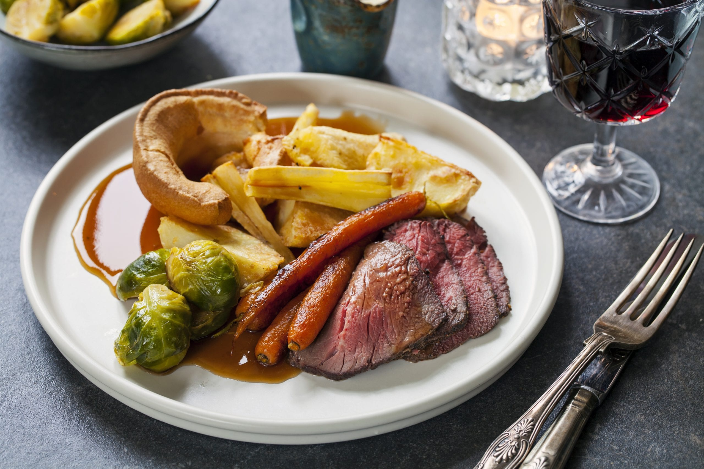

SUNDAY ROAST

A MEATY AND VEG FILLED DELUXE
A Sunday Roast is a traditional British meal that is typically served on Sunday, consisting of roasted meat,
roast potatoes and accompaniments usally consisting of diffrent types of vegggie foods.As Roman Catholics and
Anglicans traditionally abstained from eating meat on certain days of the week, the Sunday roast was seen as a
celebration because all meat and dairy could be consumed on Sundays
INGRIDIENTS
- Roast Beef
- Roasted Potatoes
- Steamed Peas
- Steamed Broccoli
- Pudding
- gravy
Method
- Create your gravy base (stock)if you’re making gravy from scratch
- Prepare your meat or veggie main event. Tie it up with string if needed. Add herbs, garlic, oil etc.
- Peel your potatoes Maris Pipers ideally, rinse and place in cold water.
- Prepare your additional vegetables and side dishes, e.g. wash and chop carrots
- Get your meat in the oven and par boil your potatoes
- Remove the meat from the oven and allow to rest.
- Add the other vegetables to the oven, if roasting. Otherwise steam/boil if preferred
- Heat up your gravy and add Puddings back to the oven to heat through.
- SERVE AND ENJOY
Back to the top
Back to main page